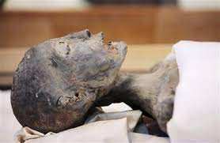
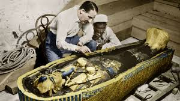

Tutankhamun, whose original name was Tutankhaten or Tutankhuaten, was born during the reign of Akhenaten, during the late Eighteenth Dynasty of Egypt.Akhenaten's reign was characterized by a dramatic shift in ancient Egyptian religion, known as Atenism, and the relocation of the capital to the site of Amarna, which gave its name to the modern term for this era, the Amarna Period. Toward the end of the Amarna Period, two other pharaohs appear in the record who were apparently Akhenaten's co-regents: Neferneferuaten, a female ruler who may have been Akhenaten's wife Nefertiti or his daughter Meritaten; and Smenkhkare, whom some Egyptologists believe was the same person as Neferneferuaten but most regard as a distinct figure.It is uncertain whether Smenkhkare's reign outlasted Akhenaten's, whereas Neferneferuaten is now thought to have become co-regent shortly before Akhenaten's death and to have reigned for some time after it.
An inscription from Hermopolis refers to "Tutankhuaten" as a "king's son", and he is generally thought to have been the son of Akhenaten,although some suggest instead that Smenkhkare was his father.Inscriptions from Tutankhamun's reign treat him as a son of Akhenaten's father, Amenhotep III, but that is only possible if Akhenaten's 17-year reign included a long co-regency with his father, a possibility that many Egyptologists once supported but is now being abandoned.
The 1922 discovery by Howard Carter of Tutankhamun's nearly intact tomb, in excavations funded by Lord Carnarvon,received worldwide press coverage. With over 5,000 artifacts, it sparked a renewed public interest in ancient Egypt, for which Tutankhamun's mask, now in the Egyptian Museum, remains a popular symbol. The deaths of a few involved in the discovery of Tutankhamun's mummy have been popularly attributed to the curse of the pharaohs. He has, since the discovery of his intact tomb, been referred to colloquially as "King Tut".
Some of his treasure has traveled worldwide with unprecedented response. The Egyptian Supreme Council of Antiquities allowed tours beginning in 1962 with the exhibit at the Louvre in Paris, followed by the Kyoto Municipal Museum of Art in Tokyo, Japan. The exhibits drew in millions of visitors. The 1972–1979 exhibit was shown in United States, Soviet Union, Japan, France, Canada, and West Germany. There were no international exhibitions again until 2005–2011. This exhibit featured Tutankhamun's predecessors from the 18th Dynasty, including Hatshepsut and Akhenaten, but did not include the golden death mask. The treasures 2019–2022 tour began in Los Angeles and will end in 2022 at the new Grand Egyptian Museum in Cairo, which, for the first time, will be displaying the full Tutankhamun collection, gathered from all of Egypt's museums and storerooms.
utankhamun was between eight and nine years of age when he ascended the throne and became pharaoh,taking the throne name Nebkheperure.He reigned for about nine years.During Tutankhamun's reign the position of Vizier had been split between Upper and Lower Egypt. The principal vizier for Upper Egypt was Usermontu. Another figure named Pentju was also vizier but it is unclear of which lands. It is not entirely known if Ay, Tutankhamun's successor, actually held this position. A gold foil fragment from KV58 seems to indicate, but not certainly, that Ay was referred to as a Priest of Maat along with an epithet of "vizier, doer of maat." The epithet does not fit the usual description used by the regular vizier but might indicate an informal title. It might be that Ay used the title of vizier in an unprecedented manner.
An Egyptian priest named Manetho wrote a comprehensive history of ancient Egypt where he refers to a king named Orus, who ruled for 36 years and had a daughter named Acencheres who reigned twelve years and her brother Rathotis who ruled for only nine years.The Amarna rulers are central in the list but which name corresponds with which historic figure is not agreed upon by researchers. Orus and Acencheres have been identified with Horemheb and Akhenaten and Rathotis with Tutankhamun. The names are also associated with Smenkhkare, Amenhotep III, Ay and the others in differing order.
When Tutankhaten became king, he married Ankhesenpaaten, one of Akhenaten's daughters, who later changed her name to Ankhesenamun. They had two daughters, neither of whom survived infancy. While only an incomplete genetic profile was obtained from the two mummified foetuses, it was enough to confirm that Tutankhamun was their father. Likewise, only partial data for the two female mummies from KV21 has been obtained so far. KV21A has been suggested as the mother of the foetuses but the data is not statistically significant enough to allow her to be securely identified as Ankhesenamun. Computed tomography studies published in 2011 revealed that one daughter was born prematurely at 5–6 months of pregnancy and the other at full-term, 9 months. Tutankhamun's death marked the end of the royal line of the 18th Dynasty.